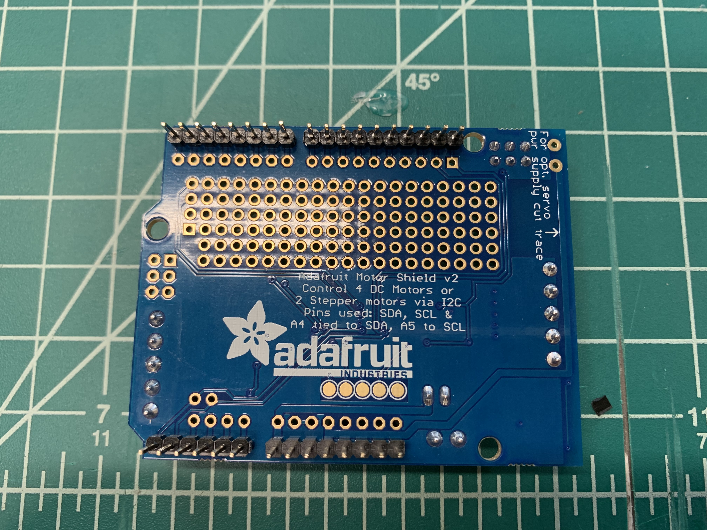
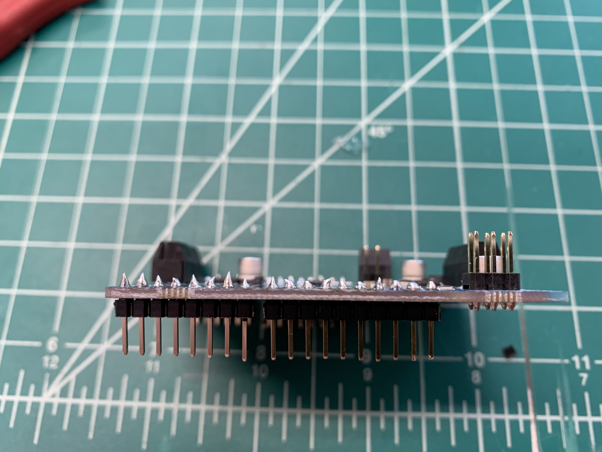
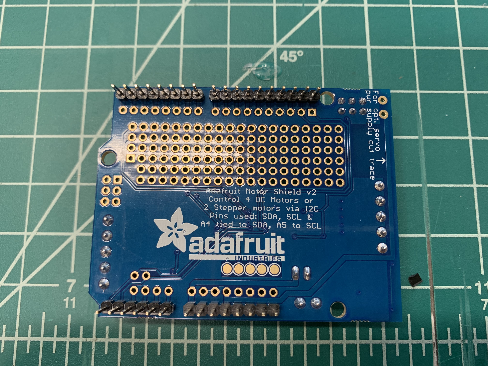
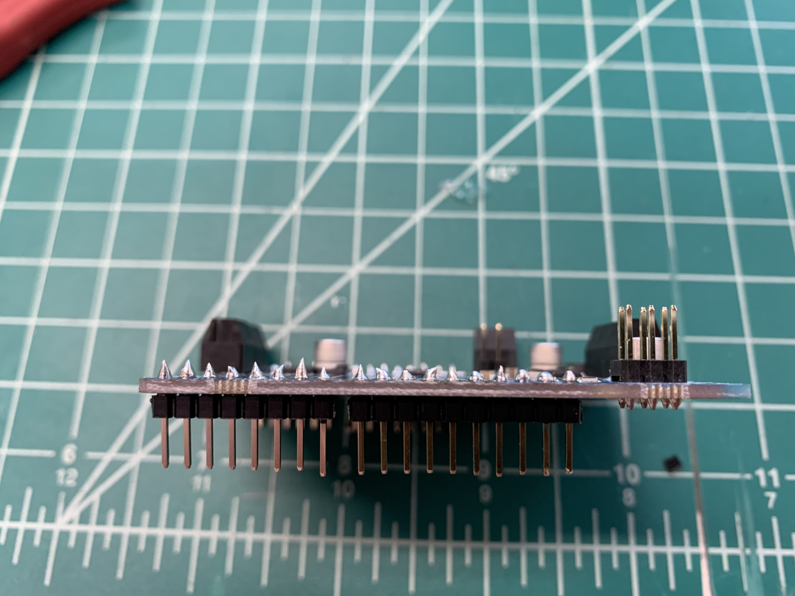

Photo One: This photo captures our photoresistor circuit attached to a breadboard prior to soldering. After mapping the Photoresistors, the range of values was changed to 0 - 100. When the robot is placed over a white surface the values read 0, and when the robot is placed over a black surface the values read 100.
Photo Two: This photo captures our potentiometer circuit attached to a breadboard prior to soldering. Turning the potentiometer clockwise increased the values. Therefore, the values of SPID should increase when the potentiometer is turned clockwise.
Photos Three - Five: The last three photos capture to finished project of soldering header pins onto the motorshield to be used throughout the project.
Challenge One Summary: The purpose of challenge one was to test previous learned circuity and coding with the Arduino. The experience learned in previous labs would be used throughout the design process of robot and will assist the robot with following a given line.
 >
>
 >
>
 


